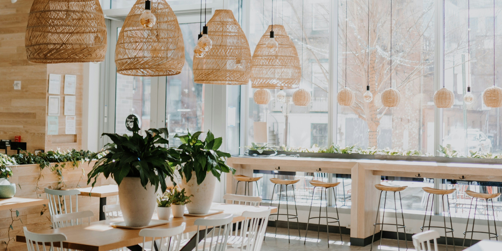
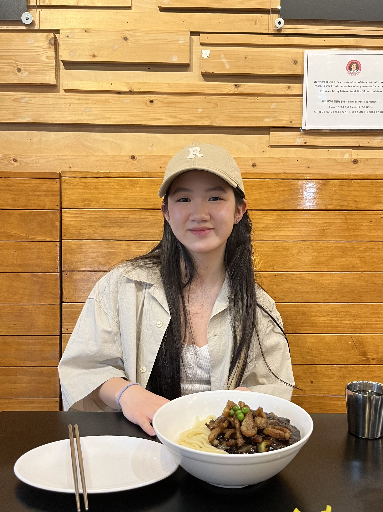
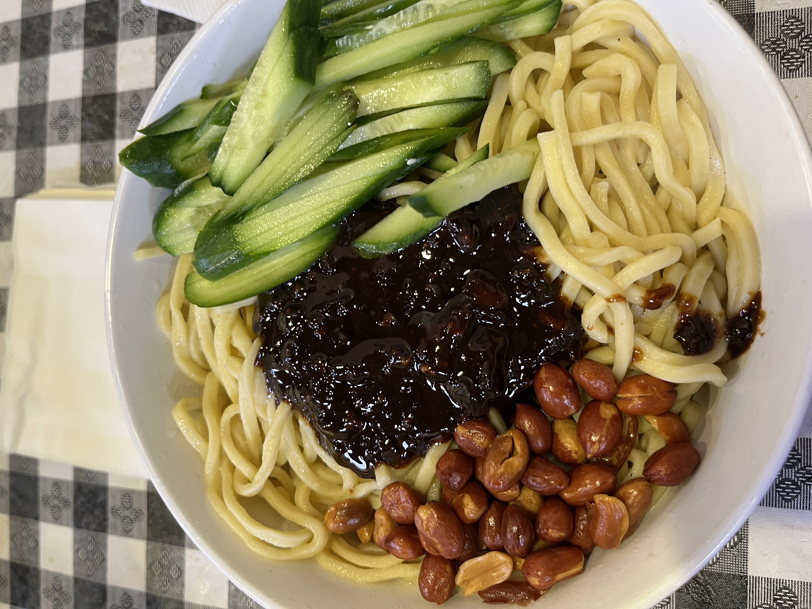
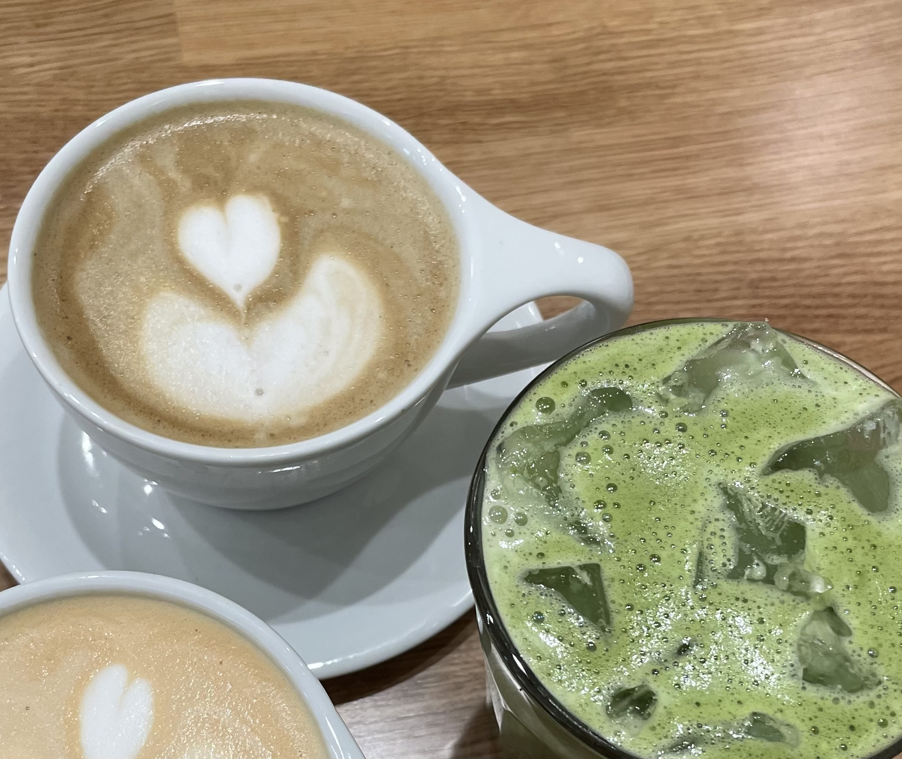

Welcome to my diary!
See my opinion on food, drinks, and all things eats.
Dig in and Learn More!Features
Check out some key features of my diary!
Photos

See each detail of every dish captured through my eyes.
Reviews
All dishes will be reviewed on an overall 1 to 10 scale rating. I'll also have some subcategories like presentation.
Lists

Find my list of restaurants and cafes I've been wanting to try!
About Me
Hi! My name is Jennie, and I am a (self) certified foodie. Instead of keeping all the food to myself, I will share my favorite, and not so favorite eats, with the world. Some food facts about me: my favorite fruit is pomelo, and my favorite cuisine is Vietnamese food. Join me in documenting what has been on my plate recently!
Meal of the Month
My favorite meal this month was this bowl of zha jiang mian from Chin Up in Madison, WI.
Drink of the Month
My favorite drink was this black sesame latte (top left) from LUCKYCAT in Chicago, IL.